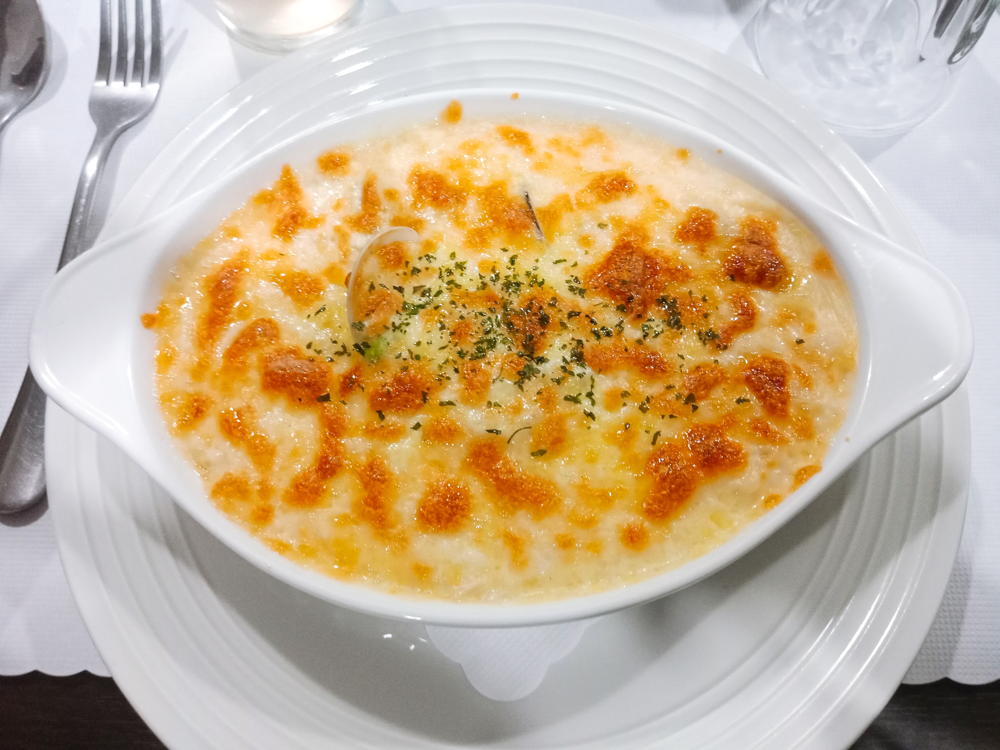

翠茶風.大享食
台東市正氣北路 滿滿一大碗牛肉丼飯 吃完很有飽足感 上面的起司厚厚一層 店裡烏龍麵的湯頭我很愛 如果飯吃膩了 旁邊還有飲料店 複合式餐飲的優點就在這了吧 有吃又有得喝
The Pasta 義麵
 台東市杭州街 不會太貴又好吃的焗飯 這裡適合簡單的小聚餐 店裡的座位不算太多 偶爾想吃義大利麵時 這裡絕對是個好選擇
河南手工扯麵
台東市傳廣路 不同於一般的麵條以及刀削麵 扯麵有著很特殊的口感 特別的是店裡的招牌 番茄蛋麵 紅通通的番茄湯頭感覺就超級營養的 平價又吃得很飽呢
蘭田手作豬排
台東市正氣北路 位在馬偕附近的小巷中 印象最深刻的就是那厚實的豬排 雖然價錢偏高了一些 但白飯和高麗菜絲以及味噌湯都能一直續 豬排好吃又能夠吃得飽 這個價錢也算是可以接受了